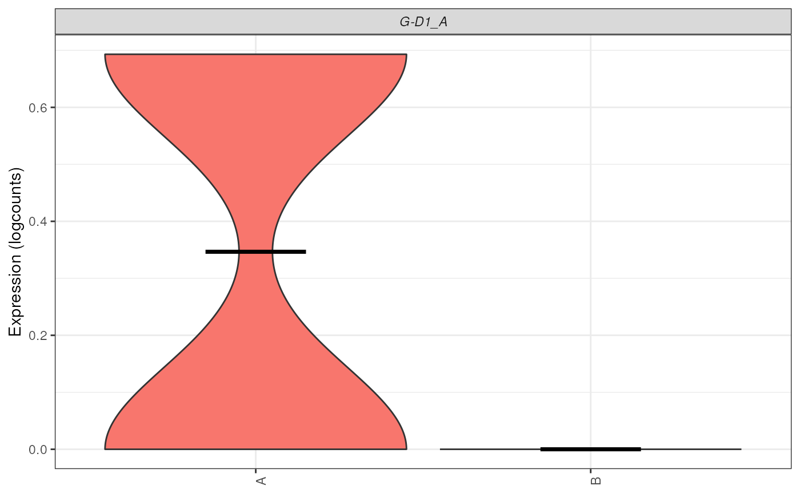
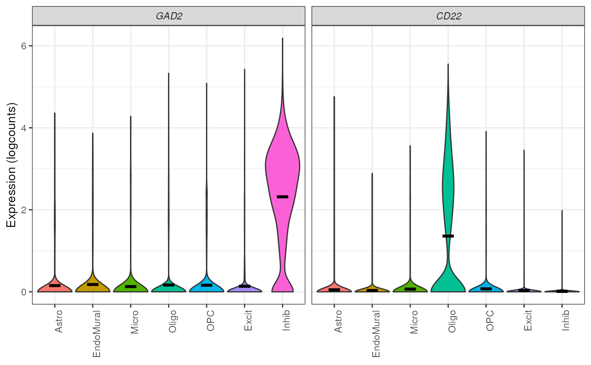
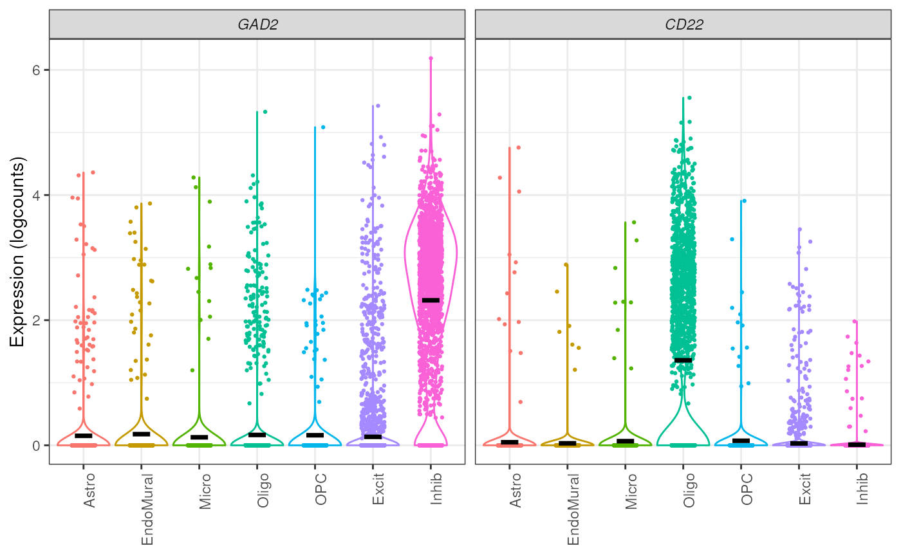
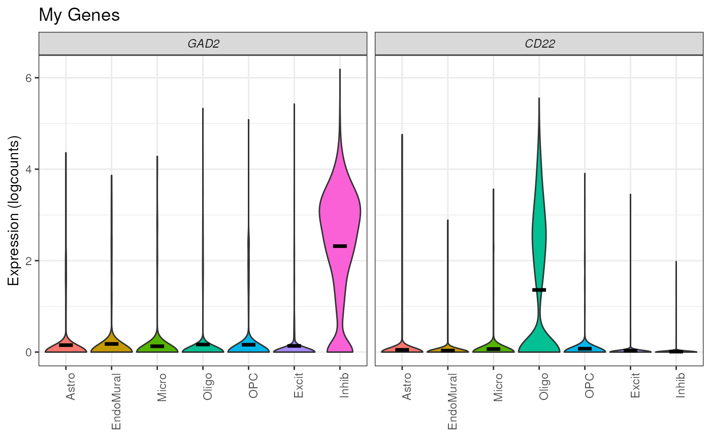

Plot the gene expression of a list of genes in a SCE object
Source:R/plot_gene_express.R
plot_gene_express.RdThis function plots the expression of one or more genes as a violin plot, over a user defined category, typically a cell type annotation.
plot_gene_express(
sce,
genes,
assay_name = "logcounts",
cat = "cellType",
color_pal = NULL,
title = NULL,
plot_points = FALSE
)Arguments
- sce
SummarizedExperiment-class object
- genes
A
list()ofcharacter(1)specifying the genes to plot, this should match the format ofrownames(sce)- assay_name
A
character(1)specifying the name of the assay() in thesceobject to use to rank expression values. Defaults tologcountssince it typically contains the normalized expression values.- cat
A
character(1)specifying the name of the categorical variable to group the cells or nuclei by. Defaults tocellType.- color_pal
A named
character(1)vector that contains a color pallet matching thecatvalues.- title
A
character(1)to title the plot- plot_points
A logical indicating whether to plot points over the violin, defaults to
FALSEas these often become overplotted and quite large (especially when saved as PDF)
Value
A ggplot() violin plot for selected genes
See also
Other expression plotting functions:
plot_marker_express_ALL(),
plot_marker_express_List(),
plot_marker_express()
Examples
## Using Symbol as rownames makes this more human readable
rownames(sce.test) <- SummarizedExperiment::rowData(sce.test)$Symbol
plot_gene_express(sce = sce.test, genes = c("F3"))

plot_gene_express(sce = sce.test, genes = c("RNF220", "CSF3R"))

plot_gene_express(sce = sce.test, genes = c("RNF220", "CSF3R"), plot_points = TRUE)

plot_gene_express(sce = sce.test, assay_name = "counts", genes = c("RNF220", "CSF3R"))

plot_gene_express(sce = sce.test, assay_name = "counts", genes = c("RNF220", "CSF3R"), title = "Inhib Markers")